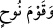

(kavmi)dir. Bir kavle göre de Âd-ı ûlâ’nın önce gelmiş olan kıdemli Âd kavmi olduğu
belirtilmiştir. Zira bu kavim Nuh (a.s.)’ın kavminden hemen sonra helâk açısından ikinci
sırayı almıştır. Yâni âyetteki Âd’dan murâd Âd b. İrem b. Avs b. Sam b Nuh’a mensup
olan tüm insanlardır. Bu kavmin önce gelmekle tavsif olunmasının sebebi; sonraki Âd
kavmiyle karışmasını önlemek için değil, bilakis Nuh (a.s)’ın kavmini müteâkıben helâk
olma zamanı bakımından diğer kavimlere olan evveliyetini zikretmek içindir.
Tekmile’de der ki: Önce gelen Âd’ın zikrinin ikinci bir Âd kavmi olduğuna işâret
ettiğini söyler. Ona göre ilk Âd kavmi Hûd (a.s)’ın kavmi olan Âd b. İrem’in kavmidir.
İkincisi de Âd b. İrem’in çocuklarından birinin kavmi olup Erîha’da Musa (a.s.) ile
savaşan kavim de bu kavimdir. Bunlar Hüzeyle binti Muâviye neslinden türemiş olup
(birinci) Âd kavminin helâkinden kurtulan Hüzeyle’nin; Ömer, Amr, Âmir ve Uteyd
isimlerindeki çocuklardır. (Anneleri) Hüzeyle, Âmâlika kavminden idi.
51. Semûd’u da (O helâk etti) ve geriye hiçbir şey bırakmadı.
“Semûd’u da (O helâk etti) (__WORD__) kelimesi (__WORD__) üzerine matuftur. Çünkü Semûd
kelimesinden sonra gelen “mâ,” mâ-i nafiye onun üzerinde amel edemez. Semûd kavmi
Sâlih (a.s.)’in kavmidir. Allah bu kavmi sayha-i Cibrîl ile helâk etmiştir.
“Ve geriye hiçbir şey bırakmadı.” Yâni her iki fırkayı; Âd ve Semûd’u yok etti.
Buradaki mânânın: “Onlara merhamet etmedi” takdirinde olması da mümkündür. Bu
takdirde de (__WORD__) kelimesi, (__WORD__) merhamet ve şefkat göstermek mânâsında kullanılmış
olur. Allah’ın onlara merhamet etmemesinin sebebi, onların gazab-ı ilahiye müstehak
bir kavim olmalarıdır. Zira Allah’ın rahmeti kahır ehli üzerine değil, lütuf ehli
üzerinedir.
Bu âyette terbiye metoduna işâret edilmektedir. Şöyle ki bu metotta evvela lütuf, sonra
itâb (gazab), üçüncü sırada ikâb vardır. Şâyet bunları dikkate almazlarsa o zaman son
olarak da ‘yok etme’ ve ‘helâk’ vardır. Allah’ın mahlûkat üzerindeki âdeti böyledir.
Kullar, bu uyarılara dikkat edip mutlak surette Allah’ın köle, câriye ve hizmetçileri
terbiye husûsundaki bu terbiye kademelerini göz önünde bulundursunlar!
52. Daha önce de çok zâlim ve pek azgın olan Nuh kavmini (helâk etmişti).
(__WORD__) ifâdesi de (__WORD__) gibi (__WORD__) kelimesine atfedilmiştir. “Daha önce de” Âd ve
Semûd kavimlerinin helâkından önce de “Nuh kavmini” helâk etmişti. “Çünkü onlar”